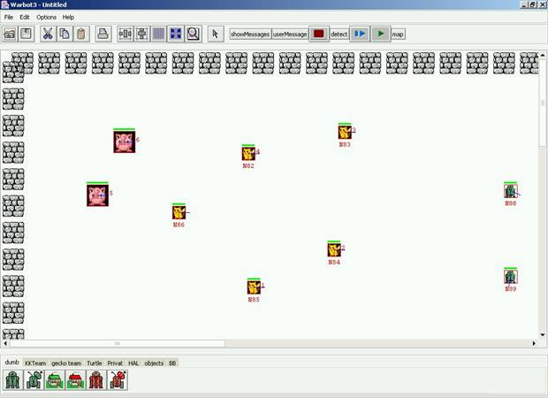
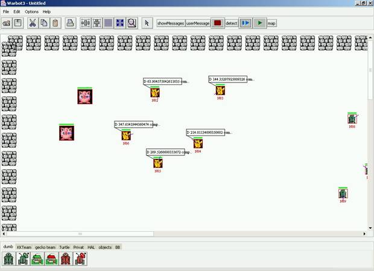
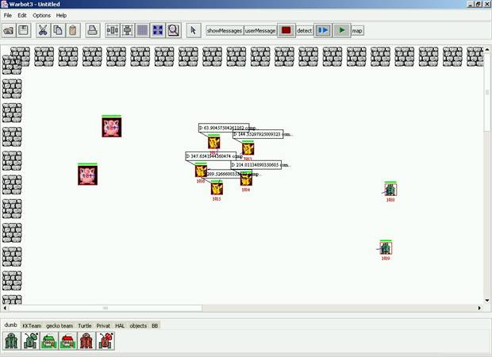
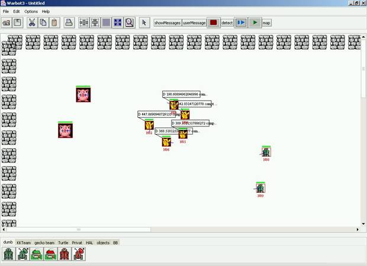
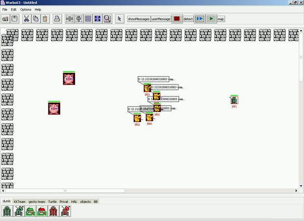
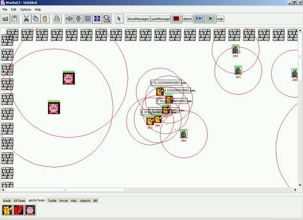
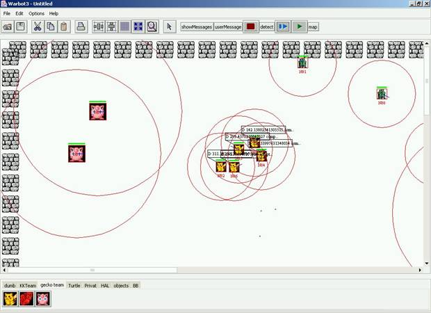
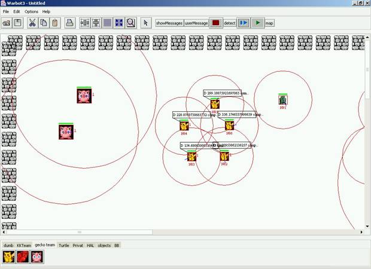
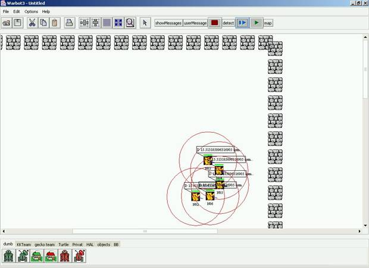
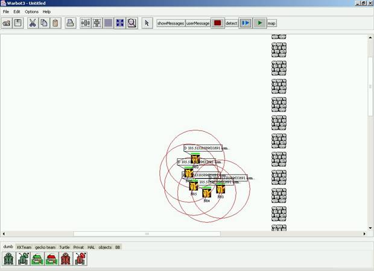

1.
INTRODUCTION
Notre idée de base est d'utiliser l'effet de meute en partant du postulat qu’une attaque de masse à plus de chance de succès que des groupes d’attaque séparés. Pour faire un rapprochement avec la Nature, on peut la comparer à une meute de loups – dans notre cas, il s’agira d’une meute de « Warriors » (RocketLaunchers). L'avantage attendu est de pouvoir détruire rapidement tout groupe d'ennemis se trouvant en infériorité numérique.
Quant à l'exploration du monde, c'est le travail des "Spys" (Explorers). Ces derniers ont simplement pour mission de détecter les bases ennemis afin d'en prévenir la meute.
Cependant, une telle gestion se révèle très délicate notamment parce que nous avons souhaité réaliser une meute "bien formée" se rapprochant du style de formation des légions Romaines, c'est à dire respectant des règles au niveau de sa structure.
Au niveau du style de cette armée de robots, on peut dire que la tactique employée est clairement une tactique d'attaque.
2. PRINCIPE
1)
Rassemblement des agents "warriors" pour former la meute.
Les warriors
vont se placer sur un cercle virtuel de sorte que le diamètre de soit suffisamment
important pour permettre la formation en demi-cercle dans l’étape suivante.
Cette phase est réellement difficile. En effet il faut calculer un point médian
(centre du cercle) en fonction de la position des warriors,
puis parvenir à les placer sur un cercle parfait en les positionnant chacun à
une distance (définie) les uns des autres; c'est à dire où chacun trouve sa
place. Bien évidemment, nous avons très vite rencontré de nombreux problèmes.
Parmi ceux-ci, nous avons relevé différents cas particulièrement difficiles à
gérer et mettant en péril notre stratégie :
-
Cas bloquant où des obstacles et/ou des warriors
alliés gênent cette procédure (plus ou moins résorbés par des cercles
(distances) de sécurité (constante modifiable dans le code, fixée à 40) et un
parcours autour du cercle, en se rapprochant de ce cercle si c’est possible,
sinon en se déplaçant dans le sens des aiguilles d’une montre, voire dans le
pire des cas, en s’éloignant du centre du cercle ou en se déplaçant en sens
inverse. Dans le cas où un warrior ne peut pas passer
à cause d'un autre warrior, il faut qu'il le
contourne en choisissant le bon côté en fonction du "relief".
-
Ou encore si le cercle calculé sort du jeux.

Figure 1 : Les warriors
sont positionnés sur la carte en début de partie.

Figure 2 : Les warriors
se rapprochent d’un centre, point moyen
de leur coordonnées….

Figure 3 : …Jusqu’à former un cercle
idéal (une certaine tolérance a été apporté quant à leur distance exacte par
rapport au rayon du cercle)
1)
Positionnement des agents en arcs de cercle.
Une fois qu'ils se sont
placés sur le cercle (Etape 1), ils effectuent une rotation afin de se placer
en arc de cercle, près à se lancer dans la direction calculée en fonction de
nos bases (à l’initialisation, en partant de l’hypothèse d’un positionnement
symétriques des bases ennemies).
Lors de cette phase les
agents se rapprochent un peu plus les uns des autres. Un warrior
va atteindre un coin du cercle et servira d’élément « stop » pour les
autres warriors qui tourneront autour du cercle dans
le même sens. Le warrior derrière le « warrior coin » va détecté par son Percept que ce warrior à atteint son état final de transformation (son nom
est non nul) et va bloquer le prochain warrior.
Chaque warrior positionné va indiqué aux autres qu’il
a terminé son déplacement ; une fois tous les warriors
positionné, nous passons à l’étape suivante.

Figure 4 :La
meute va se déplacer pour former un arc de cercle…

Figure 5 :…dont le positionnement permet une attaque autant frontale que sur les cotés de la meute
2)
Déplacement rectiligne comme une onde (au
niveau de la forme).
a) Si un seul warrior de la meute détecte un ennemis
(au niveau des percepts), nos attaquants passent tous en phase d'attaque. Par
exemple si un warrior du centre a détecté un ennemis
mais pas ceux des ailes, alors ceux des ailes continuent eux à avancer. Si leurs zone de détection détecte l'ennemi alors ils
s'arrêtent et l'attaque aussi. La stratégie d'attaque est la suivante :
ils attaquent en priorité les bases ennemies, et sinon, ils attaquent les
proies les plus faibles. Il est alors évident qu'après une bataille, la meute
est désorganisée au niveau de sa structure. C'est alors à la fin de la bataille
qu'il y a re-formation de la meute en rappelant la procédure de départ.

Figure 6 : Attaque d’un ennemi…

Figure 7 : …et…

Figure 8 :
..reformation du cercle !
b) S'ils rencontrent un mur, il
faut calculer un angle et donc une direction "valide" pour repartir.
Ici, la difficulté consiste à ne pas détruire l'équilibre de la formation (ie la forme en arc de cercle). La meute choisit donc
d’effectuer une rotation dans un sens dépendant du choix aléatoire de repartir
soit à gauche soit à droite par rapport à la position de l’obstacle.

Figure 9 : Détection d’un obstacle…

Figure 10 : …ici, la meute entame une
rotation « vers la droite »…

Figure 11 : …et continue son déplacement
à la recherche d’un ennemi.
c) Si un "spy" rencontre une base de l’ennemi, il indique
immédiatement à la meute la direction à prendre. Si la meute est en
« quête d’une proie » et qu'elle reçoit un tel message, elle change
immédiatement de cap pour aller détruire la base ennemi.
3. LES SPY
Leur rôle est de se balader dans l'espace de jeux et de détecter des bases ennemis. Avec notre système de meute "bien formée" vient alors un problème (que nous avons su résoudre) qui est la possibilité qu'un spy vienne perturber la meute en venant se mettre au milieu lors d'une manœuvre (par exemple un changement de cap). Il suffit simplement que tout spy se tienne à distance de la meute!
4. LES
WARRIORS
On les a basé sur une machine d'état dont les états
ont été précédemment cités.
5. LES BASES
Elles interviennent dans le calcul du regroupement
en cercle et dans la détermination de la direction par défaut. Nous les avons
baptisées « Fortress ».
6. LES
PROBLEMES
Nous nous sommes aperçu que certaines positions de départ défavorables nous perturbaient énormément! Notamment pour le regroupement en arc de cercle. Ainsi, dans certains cas, les warriors n'arrivent pas à contourner un autre warrior. En fait, pour gérer n'importe quelle position de départ, il nous a juste manqué un peu de temps.
La position optimale de
départ se trouve Figure 1 avec 5 warriors. La pire des positions est celle qui
consiste à mettre en ligne les warriors avec en plus
certains warriors se trouvant près de murs ou des
bases.
7. CONCLUSION
Gérer la coordination d'une meute s'avère difficile. La principale difficulté est la formation dans n'importe quelle position. Si on avait réussi à finir cela, elle aurait était sans doutes assez efficace! Un autre point est celui d'informer la meute en cas d'attaque d'une des bases amis et de pouvoir réagir suivant le contexte.
 Cependant,
l’expérience Warbot s’est révélée très intéressante
car, bien que notre équipe ait rencontré des difficultés durant l’étape des
qualifications, nous avons pu mesurer la complexité d’un tel projet
Cependant,
l’expérience Warbot s’est révélée très intéressante
car, bien que notre équipe ait rencontré des difficultés durant l’étape des
qualifications, nous avons pu mesurer la complexité d’un tel projet
Figure 12 : Imaginez ce qu’aurait pu être notre stratégie de warriors bien positionnés si nous avions pu gérer tous les cas évoqués !